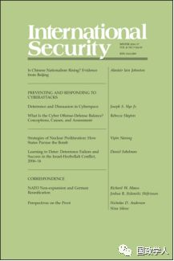
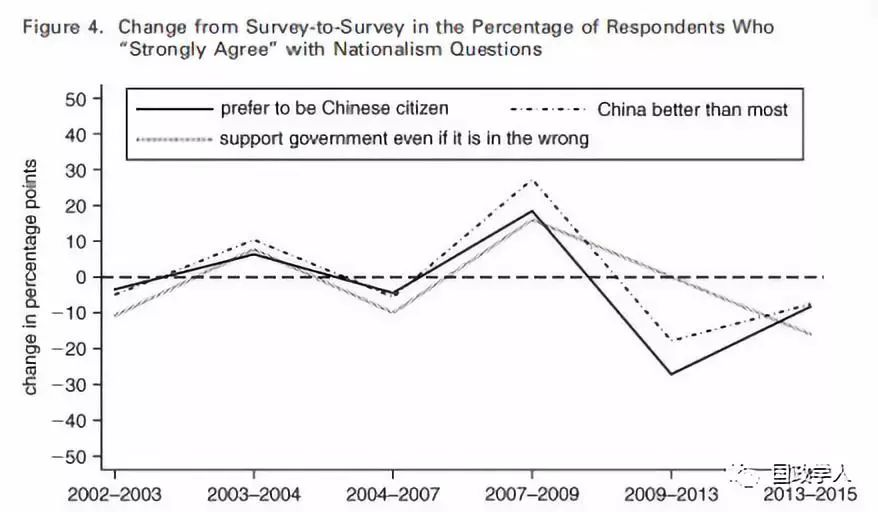
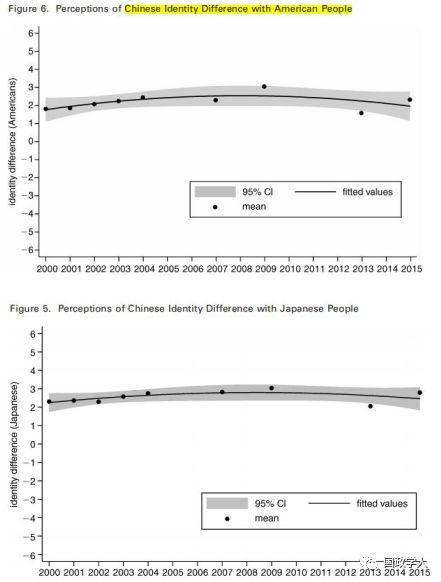
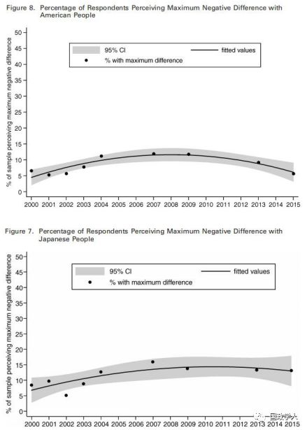
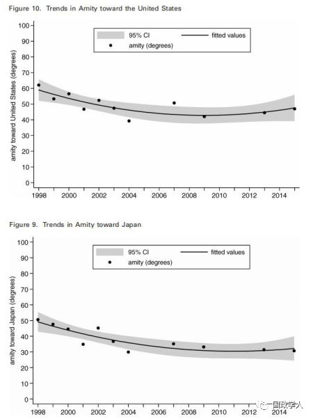
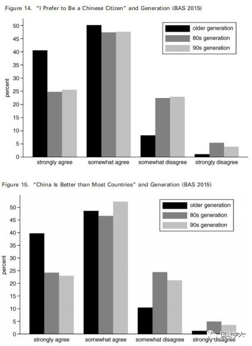
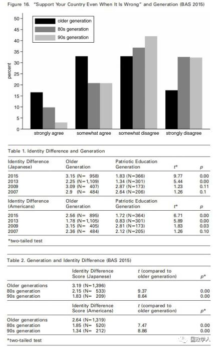
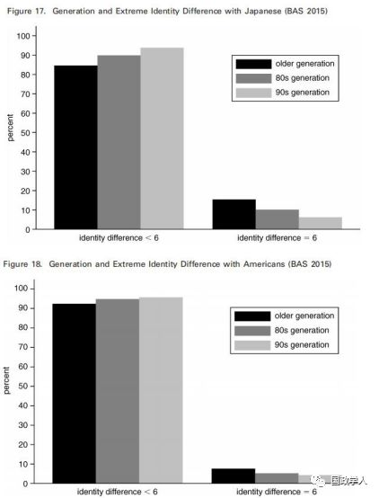
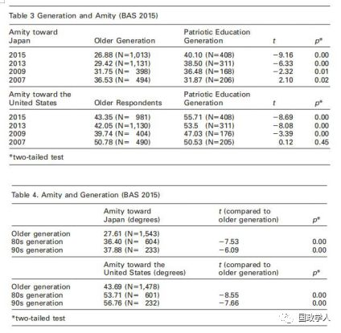

收录于合集
简 介
【作者】 Alastair lain Johnston， 江忆恩，美国哈佛大学政府系教授，被誉为“美国新生代中最出色的中国问题专家”。江忆恩的研究领域集中于社会化理论、身份与政治行为、战略文化等，其代表作有《社会国家：中国与国际体系1980－2000》、《文化现实主义：中国历史中的战略文化与大战略》。
【 编译】 李 源
【校对】 徐垚晟
【审核】 刘瑛琛
【来源】 International Security, Vol. 41, No. 3, Pages: 7-43
【期刊】 《国际安全》（International Security）是国际和国家安全领域的同行评议学术期刊。它创刊于1976年，由哈佛大学贝尔弗科学与国际事务中心(Belfer Center for Science and International Affairs at Harvard University)编辑，由麻省理工学院出版，一年四期。2017年影响力因子为4.135，在“国际关系”类别的85种期刊中排名第2位。

中国的民族主义正在高涨吗？基于对北京群众的调查
Is Chinese NationalismRising?Evidence from Beijing
江忆恩（Alastair lain Johnston）
内容提要
基于北京社会经济发展年度调查（Beijing Area Study）对北京普通民众的调查数据，作者设计了五个检验中国民族主义是否高涨（Rising）的指标。数据显示， **中国民众的民族主义倾向并未持续高涨。进入新世纪后，受访民众的民族主义倾向实际上经历了“先升后降”的过程， 2009年是这一过程的顶点。**此外，与传统观点相反， 中国年轻一代并没有表现出比老一辈更强的民族主义倾向，老一辈的人实际上有着更强烈的民族主义倾向。
作者强调这些研究成果的启示有三：第一、近几年中国在海洋争端方面表现出的强硬姿态，可能并没有受到民族主义所驱动，更多还是与能源利益、渔业权益、军方利益、决策者偏好、精英的民族主义倾向、中美安全困境等因素有关。第二、面对经济增速的放缓，中国的政治精英不太可能利用民族主义情绪来转移国内矛盾与压力。数据显示，2009年以来，即使国内经济增速放缓，中国民众的民族主义倾向实际上处于停滞或下降状态。第三、对中国政策的分析应当具有自我反思与自我批评精神，要重新审视一些在媒体、学者中广为传播的观念与理解。作者强调他的这些成果仅仅是研究中国的民族主义倾向的一个起点，未来需要更具代表性的、时间序列性（time- series）的数据分析。同时，中国的政治精英受民族主义的影响有多大，民族主义倾向与中国的对外政策之间是什么样的关系，在未来也需要进一步的研究。
文章导读
**1
**
关于中国民族主义高涨的既有争论
在这一部分中，作者回顾了现有研究中国民族主义倾向的学术文献，认为这些文献都缺少一种时间序列性（time- series）的数据分析，这制约了他们对中国民族主义的理解。
**2
**
检验日益高涨的民族主义：北京社会经济发展年度调查的数据分析
北京社会经济发展年度调查（BAS）是由北京大学中国国情研究中心设计并开展的一项年度调查研究，力图跟踪考察改革开放过程中北京市居民的生活、观念、信心和承受能力等各方面的变化。1998年起，它加入了关于外交政策、国际事务等方面的问题。作者认为，北京社会经济发展年度调查的数据是目前唯一可供利用的用以分析普通中国民众对相关外交政策议题看法的具有时间序列性的数据。因此，它的一些调查问题实际上可以反映受访中国民众的民族主义倾向。
这些问题包括以下三类。
第一类问题包括：“如果你有其他选择，是否还会愿意成为中国公民”、“中国是否比世界上大多数国家都要好”、“如果政府做错了，每个民众是否应该继续支持它”。第二类问题是关于受访民众自己与日本人、美国人之间的身份差异感。第三类问题是关于受访者对其他国家的好感度，重点包括日本与美国两个国家。
同时，作者分析了BAS相关数据的优点与缺陷。 特别需要注意的是，作者认为虽然北京民众的民族主义倾向并不能必然代表中国其他地区民众的倾向，但作为国家的政治心脏，其具有一定的总体代表性。
**3
**
检验民族主义高涨的五个指标
指标一：民族自豪感与优越感、对国家无条件的支持
从2002年开始，受访民众的民族主义倾向逐渐上升。可能是受到2008年北京奥运会的影响，受访民众的民族自豪感与优越感、对国家无条件的支持都在2009年达到了顶点。但在此之后，民族主义倾向则逐渐下降。

指标二：与日本人、美国人的身份差异
在2009年的时候，这种与日本人、美国人的身份差异感达到了顶点，之后有了某种程度的下降。

指标三：对日本人与美国人的极端负面观感
受访民众对日本人与美国人的极端负面观感也同样经历了“先升后降”的过程。2000年之后，这种极端负面观感逐步增长。但在2007年后，对日本持极端负面观感的受访民众比例总体平缓并略微下降，对美国持有极端负面观感的受访者比例下降则较为明显。

指标四：对日本与美国的好感度与负面观感
从1998年至2009年，受访民众对日本与美国的好感度一直在下降。从2009年至2015年，受访民众对美国的好感度略微增长，尽管这一增长仍处在95%的置信水平上（Confidence Line）。

指标五：民族主义与年龄
传统观点上认为，“愤青”是中国民族主义高涨的一个重要来源。但调查数据显示，受访青年并没有表现出比老一辈更强的民族主义倾向。在上文所提及的四个指标上，中国老一辈的人都表现出了比80后、90后更强的民族主义倾向，同时，相比于80后，90后一代的民族主义倾向则更不显著。




** 官网下载： The MIT Press**
https://www.mitpressjournals.org/doi/pdf/10.1162/ISEC_a_0062
_ ** _ 本文由国政学人平台独家编译首发**
更多阅读
【重磅推荐】巴里·布赞：英国学派视角下的中国崛起 | 国政学人
【重磅速递】米尔斯海默：注定失败：自由主义国际秩序的兴衰 | 国政学人
【美国研究】IS杂志：为何美国的外交大战略如此稳定？| 国政学人
【英国脱欧】以欧盟为核心的多中心外交：脱欧后英国的欧洲外交战略 | 国政学人
国政学人 （ID：guozhengxueren)
为方便学人及时阅读高质量文章
别忘把国政学人设置 星标 哦~